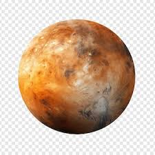
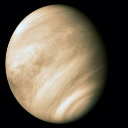
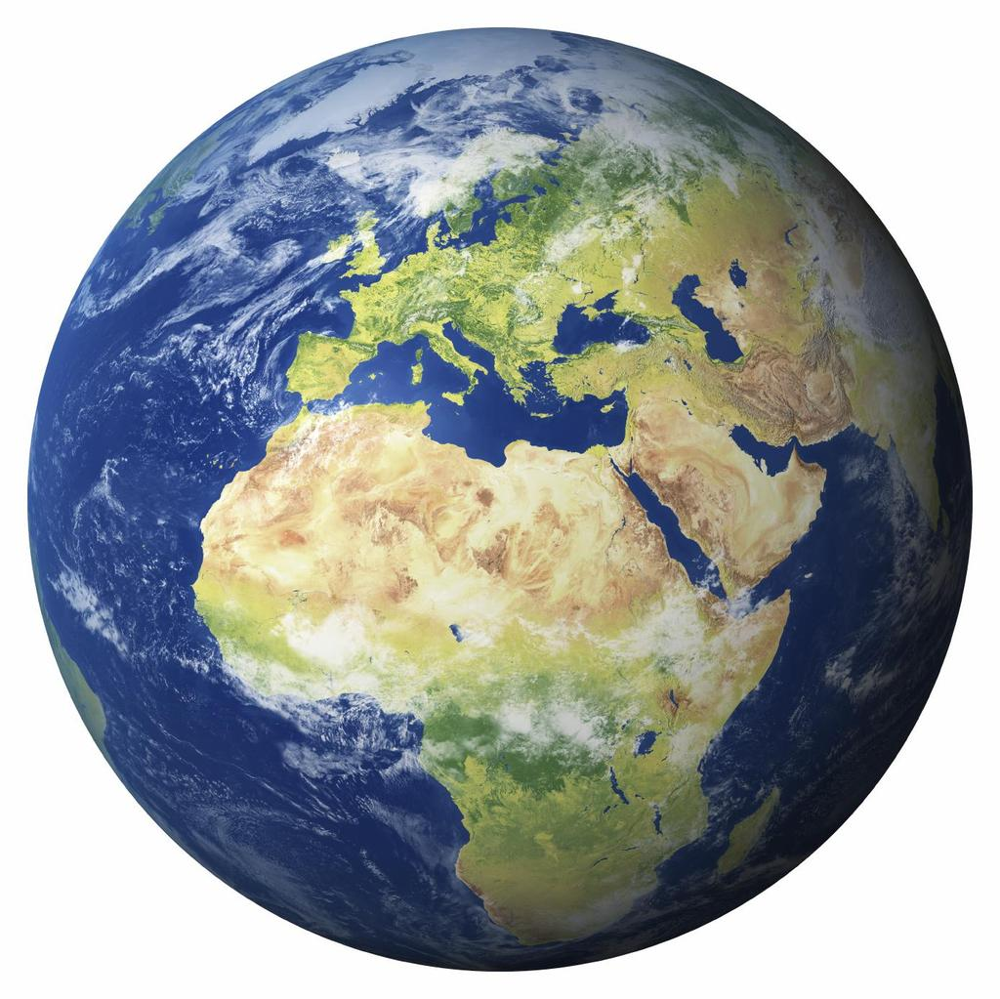
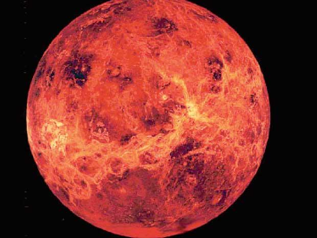
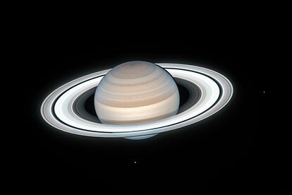
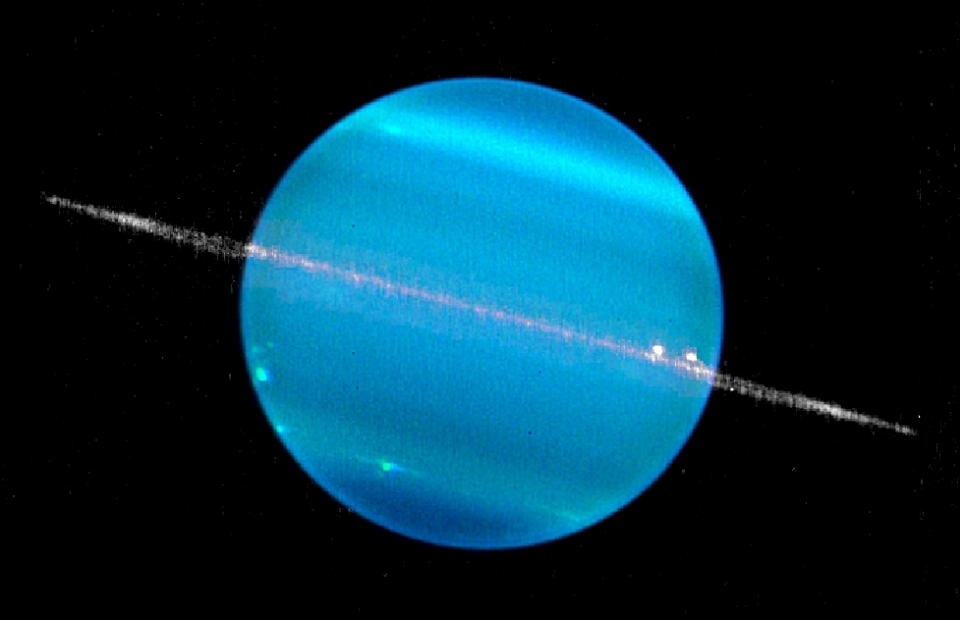

Dades sobre els planetas del nostre sistema solar (Fets planetaris presos de full de dates planetaris de la NASA-Mètric)
| Nom | Massa (1024kg) | Diàmetre (km) | Densitat (kg/m3) | Gravetat (m/s2) | Duració del dia (hores) | Distància del sol (106) | Temperatura mitja(ºC) | Nom de llunes | Notes | ||
|---|---|---|---|---|---|---|---|---|---|---|---|
| Planetes terrestres | Mercuri  | 0,330 | 4,879 | 5427 | 3,7 | 4222,6 | 57,9 | 167 | 0 | La mes propera al Sol | |
| Venus  | 4,87 | 12,104 | 5243 | 8,9 | 2802,0 | 108,2 | 464 | 0 | |||
| Terra  | 5,97 | 12,792 | 5514 | 9,8 | 24,0 | 149,6 | 15 | 1 | El nostre planeta | ||
| Mart  | 0,642 | 6,792 | 3933 | 3,7 | 24,7 | 277,9 | -65 | 2 | El planeta vermell | ||
| Planetas Jovains | Gaseoses gegants | Jupiter |
1898 | 142,984 | 1326 | 23,1 | 9,9 | 778,6 | -110 | 67 | El planeta més gran |
| Saturn  | 568 | 120,536 | 687 | 9,0 | 10,7 | 1433,5 | -140 | 62 | |||
| Gegants de gel | Urà  | 86,8 | 51,118 | 1271 | 8,7 | 117,2 | 1872,5 | -195 | 27 | ||
| Neptú |
102 | 49,528 | 1638 | 11,0 | 16,1 | 4495,1 | -200 | 14 | |||
| Planetas nans | Plutó |
0,0146 | 2,370 | 2095 | 0,7 | 153,3 | 5906,4 | -225 | 5 | Desclasificat com a planeta l'any 2006. Veure la controvèrsia | |